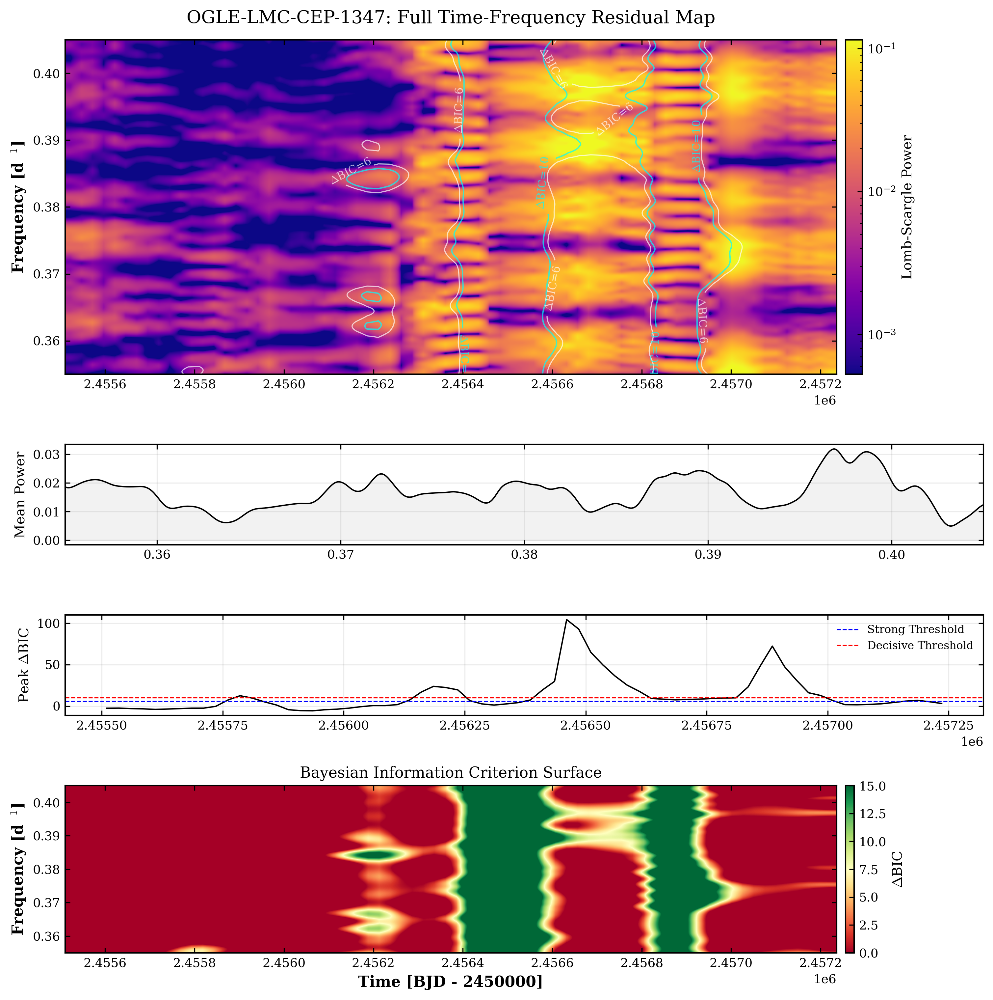
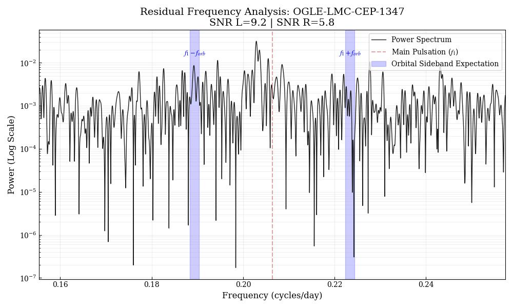

1. The Theoretical Motivator: Chandrasekhar and the Kappa Mechanism
This investigation started with a curiosity that emerged from my first Cepheid project: while studying U Sagittarii, I found myself wondering whether external forces could perturb the kappa mechanism, specifically whether the non-linear dynamics of Cepheid pulsation survive intact inside a binary with extreme tidal forces. After studying Chandrasekhar's The Equilibrium of Distorted Polytropes, I searched for an observational perspective on tidal impacts in high-mass variables, yet found a significant gap in the literature.
At the 247th AAS Meeting, I discussed this gap for several hours with Dr. Barry Madore. The consensus was that while tidal impacts were theoretically inevitable in short period systems, none had been found yet. This was because to become Cepheids, stars would first have to survive Red Giant Branch expansion, which would consume any close companions. Neilson et al. (2015) documented how rarely Cepheids survive short-period orbits without prior mass transfer. Following the discovery of OGLE-LMC-CEP-1347 by Bogumił Pilecki ($P_{orb} = 58.85d$), I realized this target was a rare chance to test those structural predictions directly.
To isolate the residuals, I fit and subtracted multiple Fourier series to the $1O$ and $2O$ pulsation modes. Because the star is in a tight orbit, I applied a barycentric correction ($t_{corr} = t_{obs} - z/c$) using orbital parameters from Pilecki et al. (2022). This pipeline achieved a residual precision of ~0.01 mag RMS. That is comparable to the amplitude of a low-amplitude non-radial mode, which set the sensitivity floor for what the photometry could plausibly detect.

2. The Madore Reanalysis & Bayesian Model Selection
Initial searches for phase-locked amplitude modulation yielded null results. However, following a reanalysis suggested by Dr. Barry Madore, I performed a deeper interrogation of the residual power spectrum. Using simultaneous weighted dual-domain fitting across the OGLE $V$ and $I$ bands, I identified a symmetric frequency triplet with a spacing of $\Delta f \approx 0.0074$ c/d. The ΔBIC surface, however, showed significance concentrated at two isolated epochs rather than persisting across the full baseline. That looked like a window function artifact, not a coherent stellar mode.

3. Physical Constraints & Tidal Modulation
Applying Kepler’s Third Law to the system masses ($M_{ceph} = 3.41 \pm 0.08 M_{\odot}$, $M_{comp} = 1.89 \pm 0.04 M_{\odot}$), I determined an orbital separation of 111 $R_{\odot}$. Using the approximation $\Delta R / R \approx (M_{comp}/M_{ceph}) \cdot (R_{ceph}/a)^3$, I estimated a geometric tidal modulation of ~0.1%. Marginal signals were detected phase-locked with the orbit at a ~3$\sigma$ level, though these remain ambiguous due to potential photometric blending with the companion. The detected power also shows a pronounced asymmetry between the two sidebands (SNR = 9.2 at $f_1 - f_{orb}$ versus 5.8 at $f_1 + f_{orb}$), inconsistent with the symmetric response expected from a genuine tidal modulation and further supporting a non-astrophysical origin.

4. Window Function Diagnostic: The "Null" Discovery
The dual-domain analysis had produced a concrete result: a candidate rotation period of 135 ± 15 days, over five σ longer than the 58.85-day orbit and superficially consistent with the tidal synchronization picture. This seemed like a very solid finding, but the ΔBIC surface had shown significance concentrated at two isolated epochs rather than persisting across the full baseline, and I wanted to understand why before attaching a physical interpretation to the period.
The statistical favorability for the rotational model required a check against the sampling artifacts of the OGLE cadence. I modeled the spectral window using exact timestamps and unit weights. The result was definitive: the candidate splitting $\Delta f \approx 0.0074$ c/d aligned almost perfectly with a harmonic of the $1/yr$ ($\approx 0.0027$ c/d) sampling alias.

This result demonstrates that the apparent rotational signal is entirely explained by the OGLE spectral window. The peak of the residual power spectrum sits within measurement uncertainty of the central window peak, and the ±1/yr sidelobes align with secondary residual peaks to the same precision. The ±2/yr sidelobes are also recovered. Residual power remains at other frequencies, but none clears a significance threshold consistent with a coherent astrophysical signal. The so-called 135-day "rotation" was an artifact of the Earth's orbit, not the underlying Cepheid physics. Had the alias gone undiagnosed, the merger-origin hypothesis would have been published alongside a false rotational claim.
5. Spectroscopic Follow-up and Future Work
This photometric aliasing problem is the primary driver for our transition to high-resolution spectroscopy. By obtaining phase-constrained spectra with ESPRESSO, we can test the merger hypothesis directly against these abundance signatures. The spectroscopic approach sidesteps the sampling limits that make ground-based photometric period searches unreliable for this system. As Co-Investigator and primary author of the Science Justification, I am currently preparing a VLT/ESPRESSO Phase 1 proposal with Dr. Bogumił Pilecki.